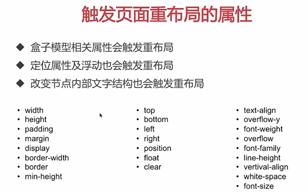

原文连接:https://www.cnblogs.com/liangweiping/p/11903872.html
现代WEB前端的性能优化
前言：这只是一份学习笔记。
什么是WEB前端
潜在的优化点：
DNS是否可以通过缓存减少DNS查询时间？
网络请求的过程走最近的网络环境？
相同的静态资源是否可以缓存？
能否减少http请求的大小？
减少http请求数
服务端渲染
涉及层面
网络层面
构建层面
服务端层面
浏览器渲染层面
基础优化：图片的编码原理、选择图片的格式、资源的合并与压缩。
进阶优化：浏览器渲染层面的优化、重绘与回流层面的优化、浏览器存储的选择与使用、浏览器端结合服务端的缓存机制。
结合服务端的优化：基于nodejs的Vue-SSR解决首屏渲染的问题。
知识点
资源的合并与压缩
目的：减少http请求数量、减少请求资源大小、减少带宽消费。
原理：通过一个入口文件（依赖的顶层），分析所有依赖，得到依赖树，最后按照依赖树，对文件进行压缩、混淆、合并、语法转换。
a) html压缩
在前端的源代码里，有些东西，只在代码里有意义，但是对于浏览器却毫无意义的。
例如：代码对齐的回车、空格、tab，代码注释。
这些东西在发布的时候可以去掉。
b) css压缩
删除回车、空格、tab，删除代码注释，css语义合并。
c) js压缩与混淆（必须）
删除回车、空格、tab，删除代码注释，代码命名和语义的缩减与优化，达到代码保护。
d) 文件合并
· 公共库合并（合并成为vendor.js）
· 分页面合并（按路由合并）
· 按实际情况合并
e) 开启gzip
将js和css文件压缩为gzip。
图一为普通模式的请求状况
“传输”：http请求大小 + 文件传输过程大小
“大小”：文件的实际大小
图二为gzip模式的请求状况，gzip的压缩阈值为10K
“传输”：http请求大小 + 文件传输过程大小（即gzip压缩后大小）
“大小”：文件的实际大小（浏览器收到gzip，解压之后的大小）
举个例子，vendor.js，原大小6.5M（echarts的源码太大了），
经过代码压缩后，成果是770K，
最后部署到nginx，启用nginx的gzip功能，浏览器请求时变成200K
6.5M->770K->200K
图片压缩
小图片转换为base64嵌入到代码里。
大图片将肉眼无法识别的色彩去除，达到压缩。
浏览器渲染
本质就是：js和css的加载顺序问题，把css放在head，js按实际需要放（尽可能放底部），而且，访问对应路由的时候才加载需要的js和css。
懒加载与预加载
懒加载：在没有进入可视区域的时候，img的src是一个很小的占位图片或者直接是空的，进入可视区域的时候，才变成有效的src。
上面代码是手工实现的，另有开源的zepto.lazyload.js，vue-cli架构下也有专门的库。
预加载：在最开头的部分，使用隐藏的img加载需要的图片，后面需要使用的时候，其它的img就会从缓存读图片。直接在js里面new一个Image对象，也能实现预加载。用ajax的get方法去加载也行，但是ajax有跨域问题。
开源的有PreloadJS

重绘与回流
浏览器渲染的时候，css的运行会阻塞js的运行。
频繁触发重绘与回流，会导致UI频繁渲染，最终导致js变慢。
尽量少触发重绘与回流可以提升性能。
重绘的代价比回流要小的多，所以，尽可能只触发重绘，而减少触发回流，就能提高性能。
在浏览器的开发者工具栏里面，性能（performance）那一项，有重绘与回流的记录。
如果无法避免重绘与回流，则尽量把重绘回流的范围限制在一个图层之内，例如video、canvas、有特定样式的div。（在谷歌浏览器的开发者工具栏的layers里面，有表明哪些元素是图层，以及那些元素之所以是图层的原因）
重绘（代价比较小）：
回流（即重布局，代价比较大）：

上面两个图看不懂没关系，可以直接看下面这个图：
.class1 { margin-left : 10px; padding-left: 10px;}
.class2 { margin-left : 20px; padding-left: 20px;}
关于第三点，修改元素样式的时候，用class的话，只回流1次，但是如果直接改style，则回流2次
关于第四点，先把元素隐藏起来，然后修改各种样式，改完再显示出去，就只回流两次。
如果直接是显示状态下改n种样式，就会回流n次。
（PS：如果用了第三点，就可以忽略第四点）
关于第五点，不要在循环里面取值，要在循环外面事先取出来
举个反例：
正确例子：
浏览器存储
在现代WEB前端，
Cookie用于标识用户，现在的人都不再用于存储数据
LocalStorage，仅用于存储数据，永久性的
SessionStorage，仅用于存储数据，生命周期跟session有关
IndexDB，前端的NOSQL数据库，永久性的，大量数据时候会用到
ServiceWorker，控制浏览器的离线缓存，通过编写ServiceWorker的js代码，可以直接控制浏览器去读缓存里的js、css、html文件，而且是完全离线的，也就是说，即使断网了，也一样可以访问网站。（如果缓存里面没有该文件，才会发请求出去拿文件）
关于cookie的一个优化点：
Cookie是作用于一个域的，请求里面携带cookie会有一定的损耗，但是一般只有调接口的时候才需要cookie，调js和css是不需要cookie的，所以，一般把前端静态文件放在CDN（即另一个域），这样子访问js和css就不会携带cookie了。对于京东来说，这样子每年可以节省上亿元的带宽消费。
缓存策略
区别于上一节，http、https自身也有缓存策略：通过控制cache-control、last-modified、Etag，可以达到自由控制缓存。
状态对比：
（200）> （304） > （200已缓存）
举个例子 10ms > 5ms > 0ms
PWA
PWA（Progressive Web App）是一种全新的网页技术，让网站的离线体验变得更好，特别适用于断断续续的网络。现在非常火，对于前端性能的优化，效果很显著。它的本质就是用了ServiceWorker。
前后端分开部署
前端，只要有html、css、js、图片就是完整的了。
后端，则有PHP、Java等语言。
PHP依赖于Apache，Java依赖于Tomcat，而前端可以放在任意的web服务容器上运行。
前端放在Tomcat、Apache、Nginx的性能比是 1：5：15。
Vue-SSR
vue-cli跟vue-ssr做出来的都是单页面应用，由于用了vue-router来实现各个tab，所以每个tab的性能都是超乎想象的优越。
而vue-ssr则是把首屏速度再度进行提升。